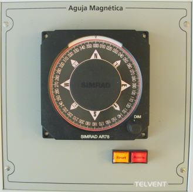

Aguja Magnética
El módulo de Aguja Magnética consiste en un repetidor de rumbo de escala única y de menor tamaño que el empleado para el Repetidor de Giroscópica.

Los controles e indicadores incluidos en este módulo son los siguientes:
- Repetidor de Aguja Magnética. Es el indicador que ocupa la mayor parte del panel, y en el se muestra el ángulo de la orientación del buque respecto al Norte Magnético (heading).
- Selector de Intensidad de Luz (DIMMER): Está situado en la parte inferior derecha del repetidor de aguja magnética y permite regular la intensidad de luz de este indicador.
- Pulsador Reset: este pulsador interrumpe la alimentación del repetidor de aguja magnética mientras permanece pulsado. Si el Repetidor de Aguja Magnética deja de recibir datos, comenzará a girar constantemente, y permanecerá en este estado hasta que se interrumpa y reponga la alimentación del equipo. En este caso, mediante una pulsación de este botón de Reset, reponemos el funcionamiento normal del equipo.
- Indicador de Avería de la Aguja Magnética y Pulsador de Enterados: este indicador rojo se ilumina de forma intermitente en rojo cuando el instructor introduce una condición de avería en el equipo Repetidor de Aguja Magnética. Cuando el operador lo presiona (reconociendo la avería), el indicador se ilumina de forma fija, y finalmente se apaga cuando el instructor elimina la condición de avería de este equipo.